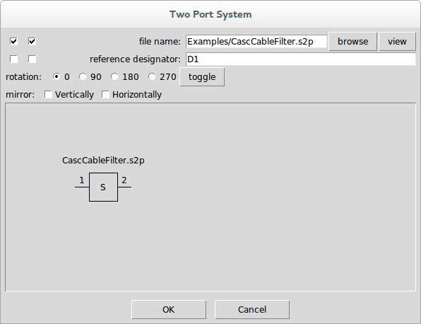
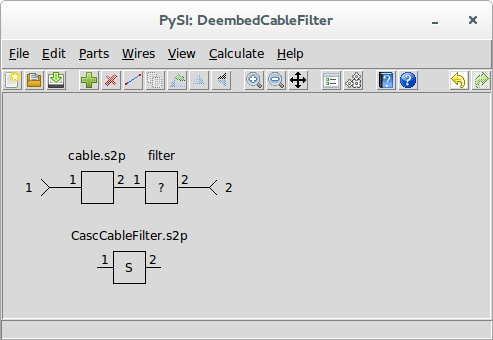

Defining the System
The system is defined by placing a special part in the schematic using Add System↓ or by using Add Part↓ and selecting System↓ devices from the Systems category.

Once selected, a file is selected containing the s-parameters of the system.

Note that when a system is placed, there are no red x’s on the unconnected ports. This is because system ports are never connected.

Note that there must be one system device in a schematic and the port numbering of the system must match the port number of the ports in the schematic. Essentially what you are telling the application is that the s-parameters of the remaining schematic represented by interconnected parts and ports matches the s-parameters of the system device.